전자기기기능사 (2009-03-29 기출문제)
1과목: 전기전자공학
1. 다음 중 이상적인 연산증폭기의 주파수 대역폭으로 가장 적합한 것은?
- 1[kHz]
- 100[kHz]
- 1000[kHz]
- 무한대
(정답률: 89%)

2. 다음과 같은 연산증폭기 회로의 명칭은? (단, 입력전압 VS는 양의 값을 갖는다.)
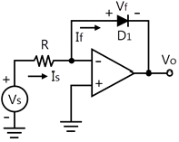
- 가산기
- 미분기
- 적분기
- 대수증폭기
(정답률: 56%)
3. 다음과 같은 회로에서 R1, R2, R3, Rf가 모두 같다고 할 때, 이 회로의 출력(eo)은?
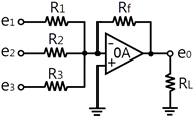
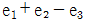
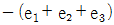
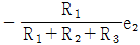
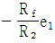
(정답률: 65%)
4. 1600[kHz] 반송파를 5[kHz]의 주파수로 진폭변조(AM)하였을 때 주파수 대역폭은 몇 [kHz]인가?
- 5[kHz]
- 10[kHz]
- 1590[kHz]
- 1610[kHz]
(정답률: 45%)
5. 다음 중 멀티바이브레이터에 대한 설명으로 적합하지 않은 것은?
- 부궤환의 일종이다.
- 고차의 고조파를 포함하고 있다.
- 회로의 시정수로 주기가 결정된다.
- 전원전압이 일부 변동해도 발진주파수는 큰 변동이 없다.
(정답률: 48%)
6. 어떤 트랜지스터 증폭기의 입력전압이 50[mV]일 때 출력 전압이 5[v]이었다면 전압 이득은 몇 [dB]인가?
- 10[dB]
- 20[dB]
- 30[dB]
- 40[dB]
(정답률: 38%)
7. 다음 회로에서 다이오드 양단에 걸리는 전압은 약 몇 [V]인가? (단, Si 다이오드이며, VS=5[V], R=470[Ω]이다.)
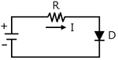
- 0.2[V]
- 0.3[V]
- 0.7[V]
- 1.0[V]
(정답률: 64%)
8. 다음 중 슈미트 트리거 회로의 출력파형으로 옳은 것은?
- 구형파
- 정형파
- 톱날파
- 삼각파
(정답률: 61%)
9. 리미터 작용을 겸한 주파수 변별기는?
- 비검파기
- 포스터실리검파기
- 헤테로다인검파기
- 초재생검파기
(정답률: 56%)
10. 다음 중 이미터접지 증폭회로의 특징으로 적합하지 않은 것은?(오류 신고가 접수된 문제입니다. 반드시 정답과 해설을 확인하시기 바랍니다.)
- 입력저항이 높다
- 출력저항이 낮다
- 전류증폭도가 1보다 작다.
- 입력전압과 출력전압이 동상이다.
(정답률: 55%)
11. 저항값이 동일한 10개의 도선을 직렬로 연결하였을 때의 합성저항은 한 도선 저항값의 몇 배인가?
- 1
- 2
- 5
- 10
(정답률: 76%)
12. 다음 중 직류신호를 차단하고 교류신호를 잘 통과시키는 소자는?
- 코일
- 커패시터
- 저항
- 다이오드
(정답률: 79%)
13. 정류회로에 부하를 연결했을 때 직류전압이 V[V],부하를 개방했을 때 직류전압이 V<sub>O</sub>[V]이면, 부하에 대한 전압변동율[%]은?
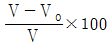
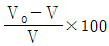
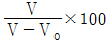
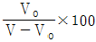
(정답률: 73%)
14. 고정 바이어스 회로를 사용한 트랜지스터의 β가 50이다. 안정도 S는 얼마인가?
- 25
- 50
- 51
- 75
(정답률: 75%)
15. 전원주파수60[Hz]를 사용하는 정류회로에서 120[Hz]의 맥동 주파수를 나타내는 것은?
- 단상반파정류
- 단상전파정류
- 3상반파정류
- 3상전파정류
(정답률: 74%)
2과목: 전자계산기일반
16. 다음 회로에 전압 150[v]를 가할 때 3[Ω]의 저항이 흐르는 전류는 몇 [A]인가?
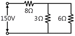
- 5[A]
- 6[A]
- 10[A]
- 15[A]
(정답률: 52%)
17. 마이크로프로세서에서 누산기(accumulator)의 용도는?
- 명령을 저장
- 명령을 해독
- 명령의 주소를 저장
- 연산 결과를 일시적으로 저장
(정답률: 87%)
18. 소프트웨어를 하드웨어화한 것으로 어떤 특정한 목적이나 기능을 갖는 프로그램 등을 하드웨어에 영구적으로 저장하는 것을 무엇이라 하는가?
- 디버깅 (Debugging)
- 펌웨어(firmware)
- 레지스터(Register)
- 미들웨어(Middleware)
(정답률: 56%)
19. 컴퓨터가 현재 실행 중인 명령 다음에 실행해야 할 명령이 저장된 메모리 주소를 기억하는 레지스터를 무엇이라 하는가?
- 플래그 레지스터(flag register)
- 명령 레지스터(instruction register)
- 프로그램 카운터(program counter)
- 메모리 주소 레지스터(memory address register)
(정답률: 69%)
20. 레지스터 내의 필요 없는 부분을 버리고 원하는 비트만을 가지고 처리하기 위하여 사용되는 연산자는?
- AND
- OR
- SHIFT
- ROTATE
(정답률: 68%)
21. 미국 표준 코드로서 DATA 통신에 많이 사용되는 자료의 표현 방식은?
- BCD 코드
- ASCII코드
- EBCDIC코드
- GRAY코드
(정답률: 76%)
22. 다음 중 사칙연산명령을 내리는 장치는?
- 연산장치
- 입력장치
- 제어장치
- 기억장치
(정답률: 63%)
23. 다음 중 범용레지스터에서 이용하며, 가장 일반적인 주소지정방식은?
- 0-주소지정방식
- 1-주소지정방식
- 2-주소지정방식
- 3-주소지정방식
(정답률: 69%)
24. 목적 프로그램(object program)을 바르게 설명한 것은?
- 데이터 관리를 위한 프로그램
- 사용목적에 따라 작성된 번역되기 전의 프로그램
- 변역용 프로그램
- 기계어로 번역된 프로그램
(정답률: 47%)
25. 다음 그림의 연산 결과를 올바르게 나타낸 것은?
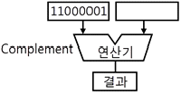
- 11000001
- 00111110
- 00111111
- 10000011
(정답률: 75%)
26. 마이크로컴퓨터의 주소선이 16비트로 구성되어 있을 때 사용 할 수 있는 기억장치에 최대 용량은?
- 8K
- 16K
- 32K
- 64K
(정답률: 73%)
27. 다음 중 객체 지향언어에 해당하는 것은?
- C
- 어셈블리어
- COBOL
- JAVA
(정답률: 64%)
28. 다음은 기억장치에 대한 설명이다. 잘못된 것은?
- 주기억장치와 보조기억장치로 분류된다.
- 주기억장치에는 디스크와 테이프 등이 사용된다.
- RAM은 DATE를 읽기도 하고 쓰기도 할 수 있다.
- 주기억장치와 CPU사이에서 일종의 버퍼 기능을 수행하는 캐시기억장치가 있다.
(정답률: 62%)
29. 다음 중 측정에 있어서 측정기의 정밀도나 정확도를 나타내는 이유로 옳은 것은?
- 측정단위가 각각 다르기 때문이다.
- 사람마다 읽는 방법이 다르기 때문이다.
- 측정기의 사용 방법이 다르기 때문이다.
- 측정기마다 그 지시치의 신뢰도가 조금씩 차이가 있기 때문이다.
(정답률: 72%)
30. 다음 중 패턴발생기(Pattern generator)의 용도로 옳은 것은?
- 정현파 발생용
- 전자회로 도면 작성용
- 라디오의 주파수
- 텔레비전의 신호 공급원
(정답률: 53%)
3과목: 전자측정
31. 측정 상황에 따른 측정장치에 대해 설명한 것 중 옳지 않은 것은?
- 이 전류 측정에는 계기용 변류기를 사용한다.
- 미소 교류 전류 측정에는 오실로스코프를 사용한다.
- 직류 전류 측정에는 가동 코일형 검류계를 사용한다.
- 고주파 전류 측정에는 주로 열전형 전류계를 사용한다.
(정답률: 55%)
32. 다음 중 직류에서 마이크로파(1~3GHz)까지의 전력을 정밀하게 측정할 수 있는 계기는?
- 의사부하법
- C-M형 전력계
- C-C형 전력계
- 볼로미터 전력계
(정답률: 61%)
33. 다음 중 오실로스코를 이용한 측정으로 알 수 없는 것은?
- 파형
- 전압의 최대값
- 전류의 최대값
- 주파수
(정답률: 57%)
34. 지시 계기의 구비 조건이 아닌 것은?
- 절연 내력이 낮을 것
- 눈금이 균등하든가 대수 눈금일 것
- 확도가 높고, 외부의 영향을 받지 않을 것
- 지시기 측정값의 변화에 신속히 응답할 것
(정답률: 65%)
35. 소인(Sweep)발진기의 구성요소에 포함되는 것은?
- 고주파 발진기
- 음차 발진기
- 혼합 검파기
- 의사 공중선
(정답률: 55%)
36. 다음 중 자동평형 기록계기의 측정원리는?
- 영위법
- 편위법
- 직접측정법
- 간접측정법
(정답률: 75%)
37. 다음 그림에서 측정 범위를 5배로 하기 위한 배율기의 저항값은?
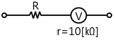
- 2.5kΩ
- 25kΩ
- 30kΩ
- 40kΩ
(정답률: 48%)
38. 고주파 전력을 측정하는 방법 중 콘덴서를 사용하여 부하전력의 전압 및 전류에 비례하는 양을 구하고, 열전쌍의 제곱 특성을 이용하여 부하 전력에 비례하는 직류전류를 가동 코일형 계기로 측정하도록 한 전력계는?
- C-C형 전력계
- C-M형 전력계
- 볼로미터 전력계
- 의사 부하법
(정답률: 61%)
39. 단상 교류의 전력을 측정할 때 사용 가능한 계기는?
- 가동코일형 계기
- 가동철편형계기
- 전류력계형 계기
- 열전형 계기
(정답률: 56%)
40. 전압이득이 100일 때 이것을 dB로 나타내면?
- 2dB
- 20dB
- 40dB
- 100dB
(정답률: 65%)
41. 초음파 가공기에서 혼(horn)의 역할로 가장 적절한 것은?
- 진동을 약하게 하기 위해
- 공구의 진폭을 크게 하기 위해
- 공구와 결합을 쉽게 하기 위해
- 발진기와 임피던스 매칭을 하기 위해
(정답률: 65%)
42. 목표값이 시간에 따라 변화하고 출력이 이것을 추종함의 제어는?
- 정치제어
- 추치제어
- 과도제어
- 프로세스 제어
(정답률: 58%)
43. 다음 회로의 전달함수는?
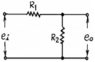
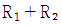
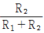
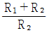
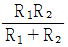
(정답률: 63%)
44. 다음 컬러 수상기의 협대역 방식 구성도에서 □ 부분에 들어 갈 내용은?
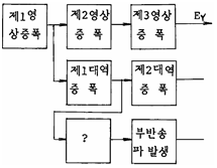
- 영상 출력
- 버어스트 증폭
- x축 복조
- 수정 필터
(정답률: 63%)
45. 변위신호가 가해지면 출력단자의 변위에 비례하고 크기를 가진 교류신호가 나오는 것은?
- 차동변압기
- 저항식 서보기구
- 리졸버
- 싱크로
(정답률: 54%)
4과목: 전자기기 및 음향영상기기
46. 라디오존데로서 측정할 수 없는 사항은?
- 기압
- 온도
- 풍속
- 습도
(정답률: 64%)
47. 야기(yag)공중선의 구조상 도선(파이프)의 길이가 제일 긴 것은 무슨 역할을 하는가?
- 투사
- 반사
- 도파
- 흡수
(정답률: 50%)
48. 스피커의 재생 음역을 3분할하는 방식의 유닛이 아닌 것은?
- 우퍼(woofer)
- 디바이더(divider)
- 트위터(tweeter)
- 스쿼커(squeaker)
(정답률: 63%)
49. 다음 그림은 자동제어 검출부의 구성을 나타낸 것이다. ㉡에 해당하는 것은?
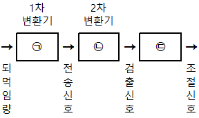
- 검출기
- 조절기
- 전송기
- 되먹임기
(정답률: 47%)
50. 다음 중 계기 착륙 방식이라고도 하며 로컬라이저, 클라이드 패스 및 팬 마커로 구성되는 것은?
- ILS
- NCB
- WCR
- ONE
(정답률: 80%)
51. 고주파 유도가열에서 열 발생의 원인이 되는 현상은?
- 와류
- 정전유도
- 광전효과
- 동조
(정답률: 64%)
52. 센서의 명명법에서 X형 센서로 표시하지 않은 것은?
- 변위센서
- 속도센서
- 열센서
- 반도체형 가스센서
(정답률: 65%)
53. 자기테이프(magnetic tape)의 주파수 특성에 크게 영향을 주지 않는 것은?
- 자성막의 두께
- 표면의 고르기 상태
- 자성체의 보자력
- 테이프의 길이
(정답률: 58%)
54. 다음 중 VTR에서 회전드럼 또는 실린더에 붙여서 회전하는 것은?
- 음성헤드
- 재생헤드
- 소거헤드
- 비디오헤드
(정답률: 49%)
55. 초음파 측심기로 물의 깊이를 측정할 때 옳은 식은? (단, v : 초음파속도, t : 시간)
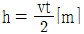
- h = vt[m]
- h = 2v[m]
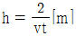
(정답률: 74%)
56. 증폭기를 통과하여 나온 출력 파형이 입력파형과 닮은꼴이 되지 않는 경우의 일그러짐은?
- 과도 일그러짐
- 위상 일그러짐
- 비직선 일그러짐
- 파형 일그러짐
(정답률: 50%)
57. 다음 중 FM수신기 전용회로가 아닌 것은?
- 진폭제한 회로
- 디엠파시스 회로
- 저주파증폭 회로
- 프라엠파시스 회로
(정답률: 40%)
58. 전축 바늘이 레코드판 용구의 벽을 밀기 때문에 생기는 잡음을 제거하기 위하여 사용하는 필터(filter)는?
- 수정필터
- 스크래치 필터
- RC필터
- CL 필터
(정답률: 69%)
59. 항공기나 선박이 전파를 이용하여 자기 위치를 탐지할 때 무지향성 비컨 방식이나 호밍 비컨 방식을 이용하는 항법은?
- 쌍곡선 항법
- P-B항법
- 방사상 항법[1]
- 방사상 항법[2]
(정답률: 70%)
60. 다음 각 항법장치의 설명 중 옳은 것은?
- TACAN : 전파의 도래 방향을 자동적으로 측정한다.
- ADF : 두국 A, B의 전파의 도래 시간차를 측정한다.
- VOR : 사용주파수는 108[MHz]-118[MHz]의 초단파를 사용한다.
- 로란(Loran) : 지상국으로부터 범위와 거리를 측정하는 시스템이다.
(정답률: 68%)